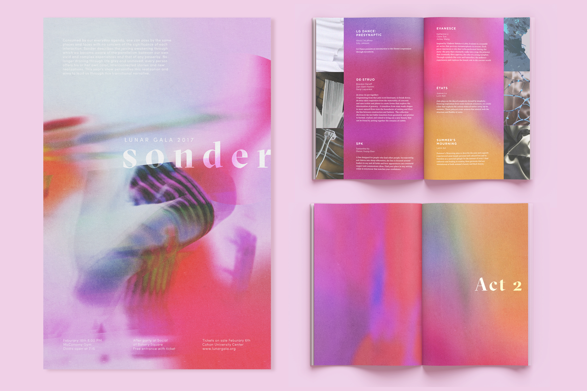
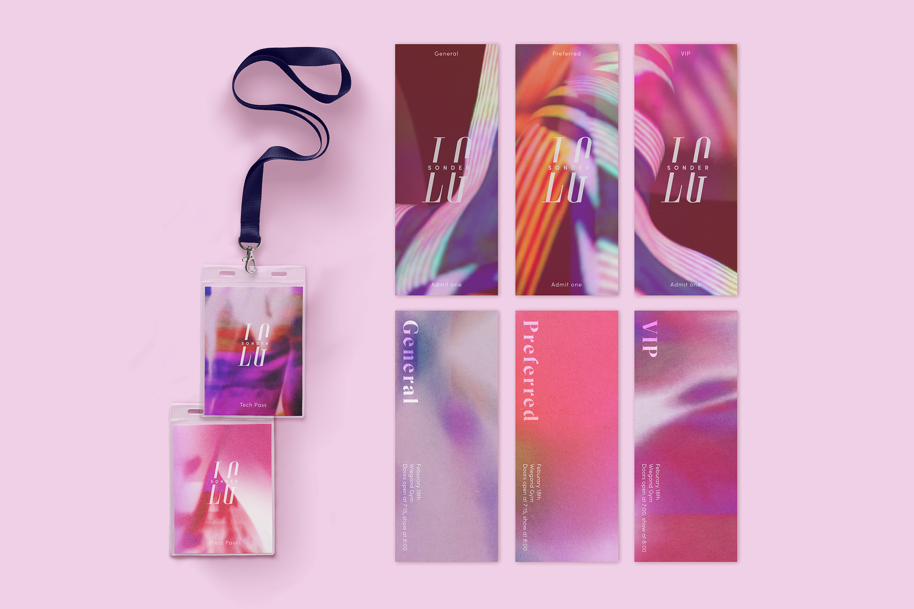
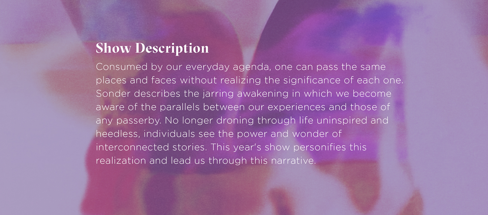

Branding a creative showcase
Lunar Gala is a student produced and run fashion show at Carnegie Mellon University featuring student designers, models, and performers. Working with a team, I developed and defined the branding and print materials for the show with. The brand was then expanded by a team of web and motion designers.
 Each year's theme is based on the lunar zodiac; 2017 is the year of the rooster. From rooster, we wanted to explore themes of awakening and rebirth and chose "Sonder" as the title of the show. Sonder is the realization every individual, no matter how insignificant to you, leads their own unique life simultaneous to yours.
This description drove the visual development of Sonder's brand. We focused on creating ephemeral abstract imagery to inspire wonder. Bright splashes of saturation mimic a gradual realization and grainy, blurred images suggest images coming in and out of focus. Lunar Gala is a highly anticipated event and we wanted to make sure each years branding was unlike the last.